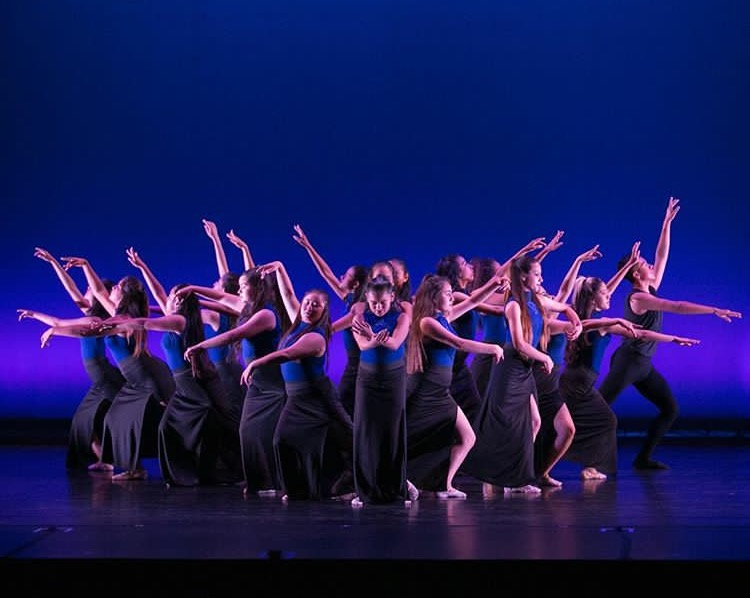

Powered by

Dance Life

The Montalban Theatre
The Montalban Theatre is a theatre in Hollywood and Vine where we perform yearly performances in our group, Everybody Dance.

Everybody Dance
Everybody Dance is a non-profit organization that allows to students in under-priviliged communities a chance to dance and start a dancing career.

Aimee, Ashley, and Sugey
We are teens involved in the Everybody Dance Program where we have been discovering our passion for dance for more than 8 years. We present shows that reveal what we have learn throughout the year and it is a great opportunity to have to pursue a dancing career.